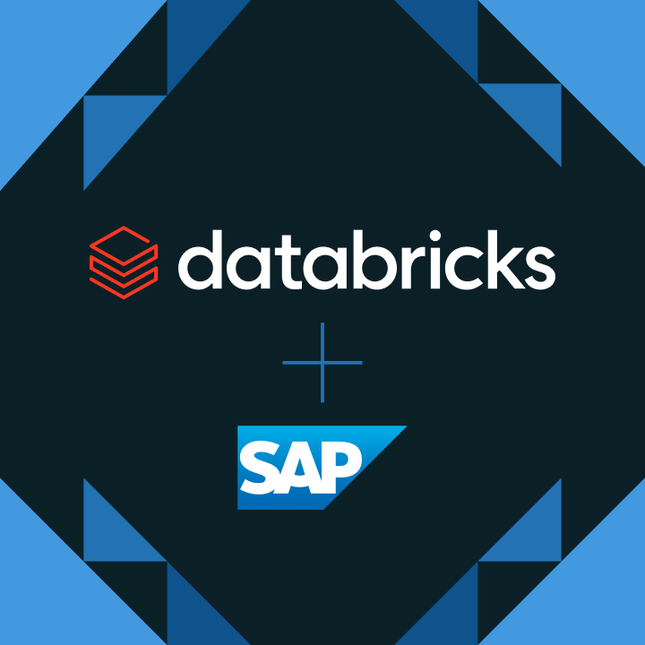
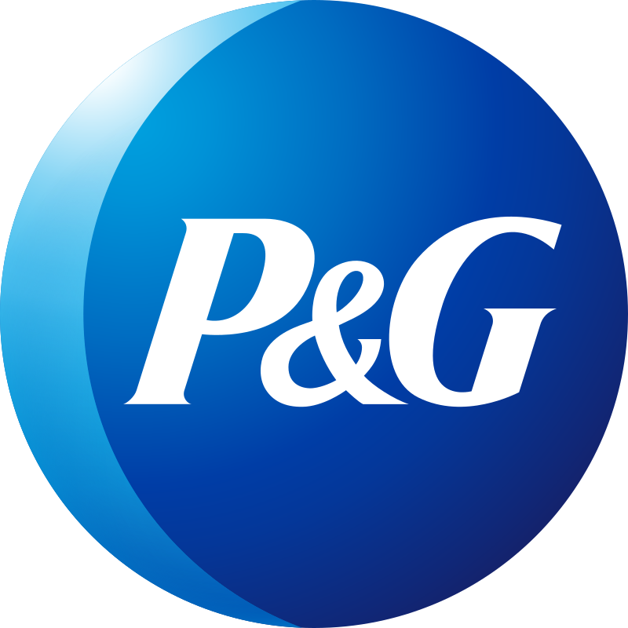
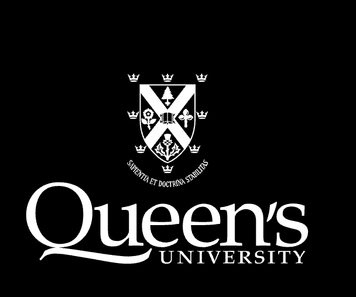
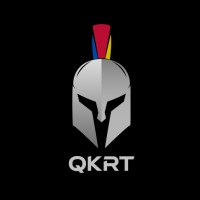
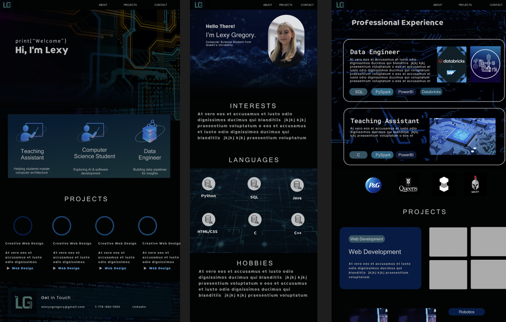
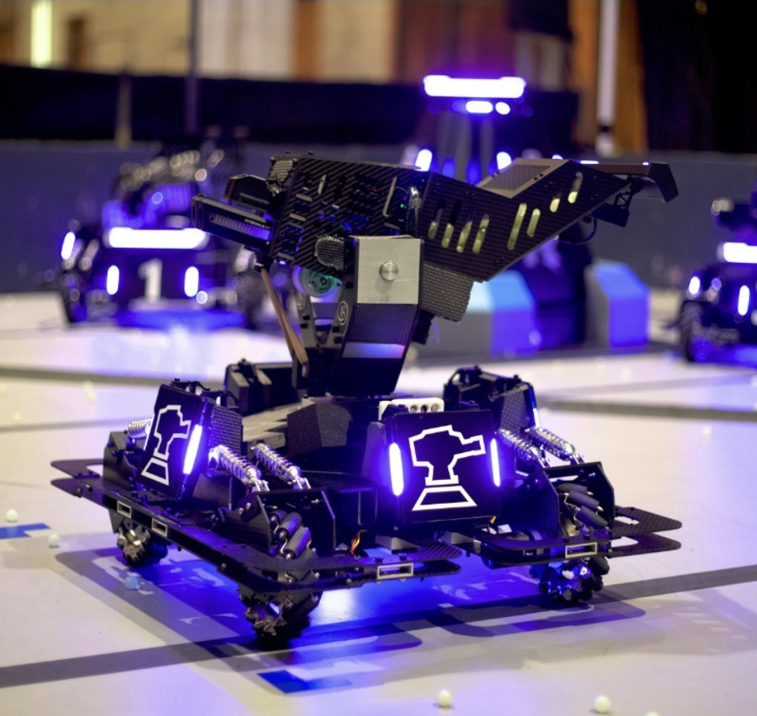
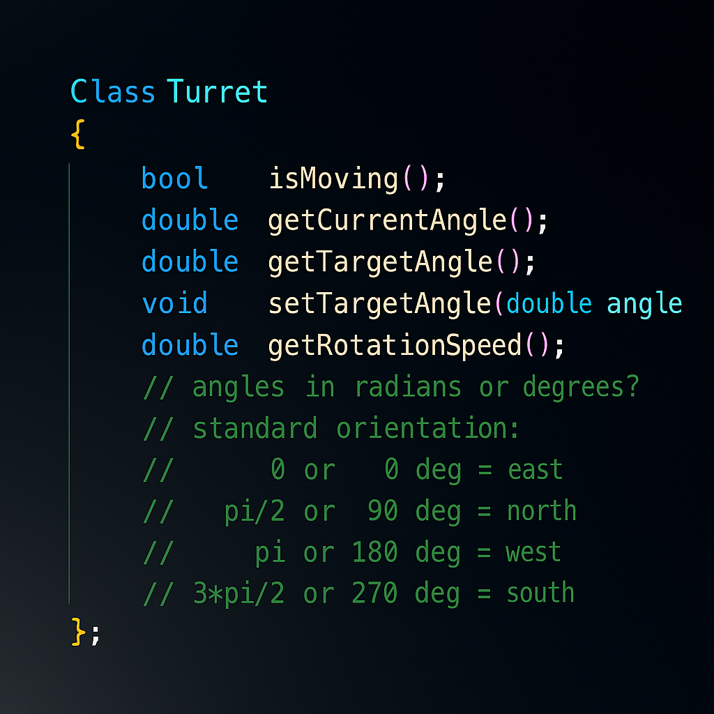
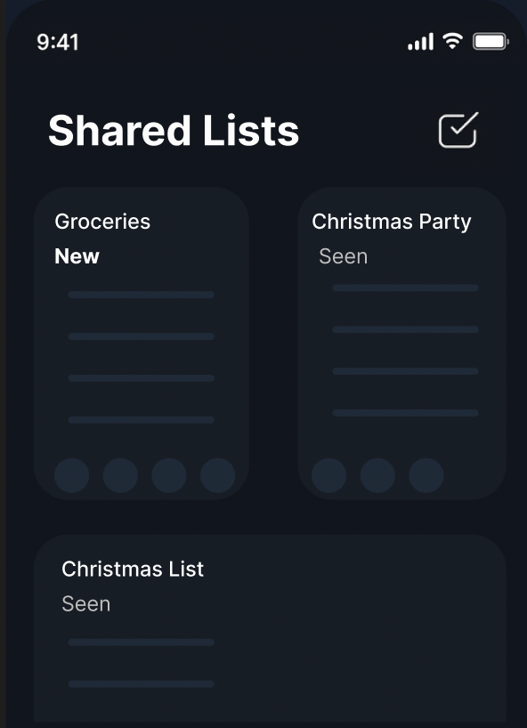
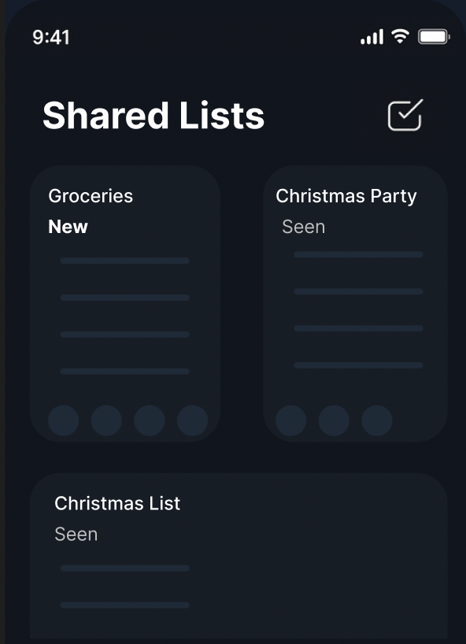

Experience
Data Engineer
Procter & Gamble - 12 months
- Built scalable ELT data pipelines to move data from SAP to Azure Common Data Lake using Databricks and Azure Data Factory.
- Developed Power BI dashboards for business insights and reporting.
- Created notebooks that joined millions of records and automated data validation to ensure high data integrity.
- Designed and implemented an automated data validation tool using Databricks, PySpark, and SQL, significantly improving accuracy and efficiency.
- Collaborated in System Integration Testing (SIT) and User Acceptance Testing (UAT), identifying and resolving data-related defects.
- Automated Sales Stewardship workflows using Power Automate, Excel, Outlook, and Microsoft Lists, reducing manual workload.
- Developed ETL pipelines utilizing metadata from a SQL database using Azure Data Factory and SQL Server Management Studio (SSMS).
SQL
PySpark
DataBricks
ADF

Teaching Assistant
Queen's University - 4 months
- Assisted in teaching core topics in computer architecture, including instruction set architectures, assembly language, data representation, and operating system management.
- Held weekly office hours to support student learning and clarify complex concepts.
- Graded assignments and provided timely, constructive feedback.
- Supported students outside of class through email-based guidance and Q&A.
Assembly Language
Operating Systems
Data Representation



PROJECTS
Web Development
Web Development
Crafted visual elements using Figma. Built the website with the use of HTML, CSS, and JavaScript. Implemented a dynamic form using PHP and integrated Gmail SMTP.



Robotics
Aim Bot
As a member of the Queen's Knights Robotics Team (QKRT) on the Aim Bot subteam, I played a key role in developing the controls for turret actuation and object tracking, directly contributing to the team's offensive capabilities in the RoboMaster Robotics Competition. My work involved modifying the gimbal system to enable position control rather than velocity control, which improved the bot's precision and responsiveness. Using C++, I implemented and optimized control algorithms that enhanced targeting accuracy and performance during competition scenarios.
Artificial Intelligence
Video Game Agents
As a member of the QMIND team, I developed AI video game agents using Python and the GVGAI gym environment. I implemented deep reinforcement learning algorithms to train these agents, focusing on enhancing their decision-making capabilities through iterative testing and parameter optimization. By carefully refining the training process, I improved the agents' performance and adaptability across different game environments. I also presented this work at CUCAI, showcasing my AI expertise and sharing insights with peers in the field.

 

Mobile App Design
Mobile Application
As a member of QWEB, I collaborated with a team to develop a web application designed to enhance communication within households. The app featured a shared calendar, collaborative lists, and a notification board to help users stay organized. I contributed to both the front-end and back-end development, utilizing Figma, HTML, CSS, and JavaScript.
Let's Connect
(778) 882-1503
alexysgregory@gmail.com